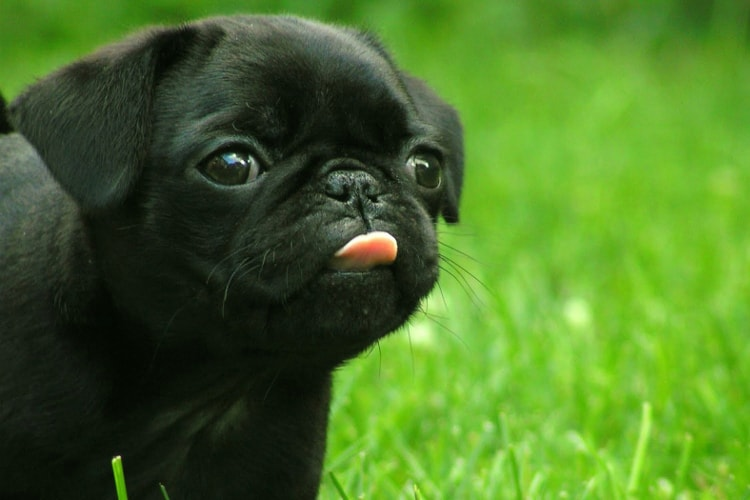

Esta é uma página HTML mais completa, com um pouco de texto e uma imagem.
O Pug é um cachorro extremamente amigável, convivendo muito bem com crianças e outros animais de estimação. Muito amoroso e apegado aos tutores, ele se contenta apenas com o fato de ser parte de uma família! Além disso, a aparência excêntrica o torna único. Seja pelo focinho achatado, seja pela cauda enroladinha, o Pug chama atenção de qualquer apaixonado por pet com facilidade.
